sobre mim

Hiiiii, meu nome é Alessandro tenho 18 anos, moro em Uberlândia-MG e sou um desenvolvedor full-stack. Tenho uma paixão por criar sites e jogos, estou sempre buscando aprender novas tecnologias e aprimorar minhas habilidades para me tornar um desenvolvedor mais completo!. Vale resaltar que tenho um grande foco no back-end pois lido melhor com ele do que com o front-end.
Linguagens
- HTML
- CSS
- JavaScript
- Python
- flask
- GDscript
- SQL
- PostgreSQL
Ferramentas
- Visual Studio Code
- Git
- GitHub
- Figma
- Canva
- Godot
- Windows
- Linux
Estudando:
- C++
- React
- Node.js
- Vite
Projetos:
- Desenvolvedor full-stack - MyMonster (2025 - Presente)
- Desenvolvedor front-end - Uny mais perto (2025 - 2025)
- Desenvolvedor de Jogos - Cinicidio (2025 - Presente)
Desenvolvi um site de venda e curiosidades de Monster Energy com uma rede social e cadastro funcionais
Desenvolvi um site junto com um colega, cujo o site se chama Uny mais perto, utilizando HTML, CSS e JavaScript. O site consiste em ser um site informativo da área médica móvel
Desenvolvo com uma equipe de desenvolvedores de jogos indies. jogo se trata de um Souls-like envolvendo temas sensíveis como emoções de depressão e afins
perguntas
- O que eu fingi saber nesse meu tempo trabalhando com programação?
- onde eu perdi tempo de forma vergonhosa?
- O que um dev identificaria em 5 minutos no meu código?
- Como eu justificaria meu baixo desempenho para um RH?
- Afinal, vale a pena me contratar com esses problemas?
Word, Excel e PowerPoint
erros de digitação(3h). erros de lógica básica(5h)
falta de comentários. falta de espaçamento. e divs!
problemas de comunicação e mental instável.
Posso afirmar que sim, especialmente porque ninguém no mundo é perfeito. meus problemas são simples de resolver, tudo exige tempo e prática para aperfeiçoar, especialmente quando se trata de uma experiência profissional. Problemas como a falta de saúde mental, podem ser resolvidos com férias!!!, brincadeira (ou não), eu só posso melhorar meus defeitos tentando evitá-los e encarando eles de frente disposto a melhorar!
Baboseiras
essa parte é apenas coisas bobas e opiniões pessoais questionaveis!!
Jogos favoritos (nao ordenados)
- Shadow of the colossos
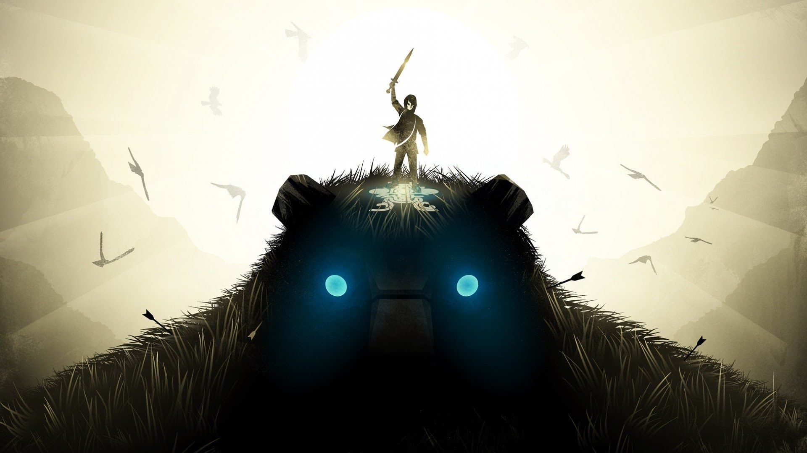
- God of War

- The Last of Us part I
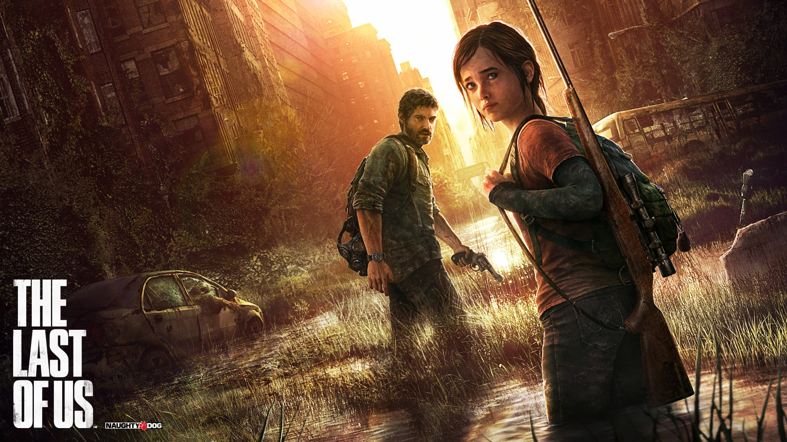
- League of Legends
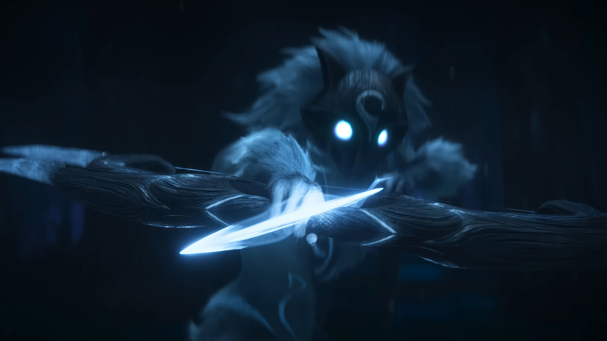
- Hollow Knight
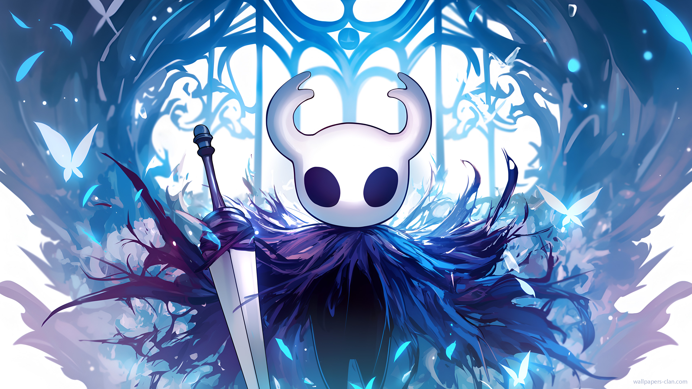
Animes favoritos (nao ordenados)
- Full Metal Alchemist
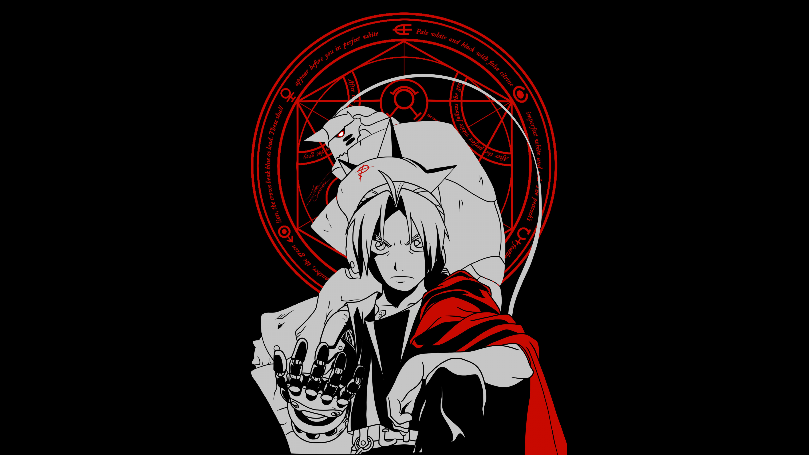
- Hunter X Hunter
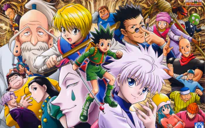
- Akami Ga Kill
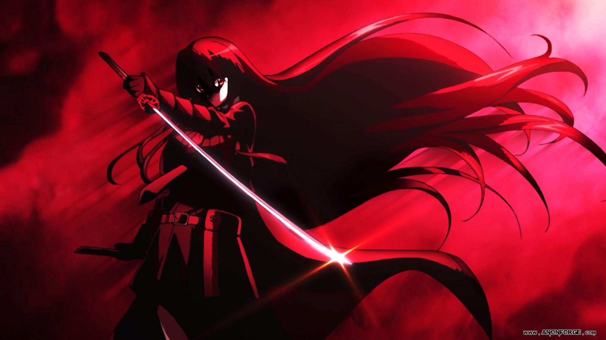
- Neon Genesis Evangelion
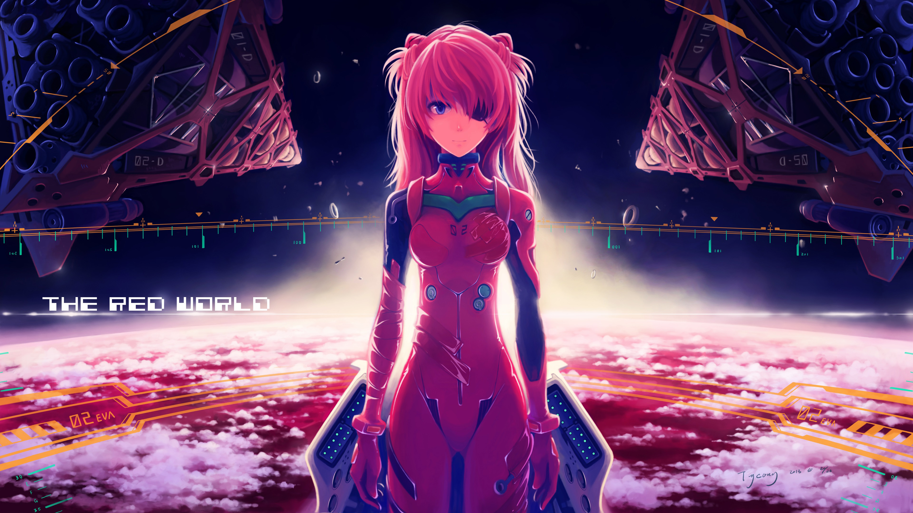
- cowboy bebop
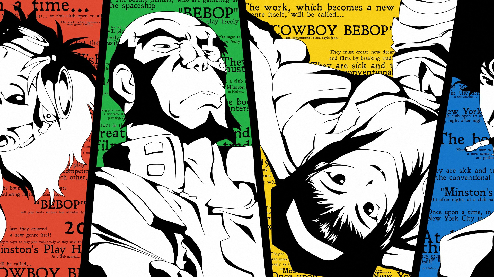
Livros favoritos (nao ordenados)
- Maus
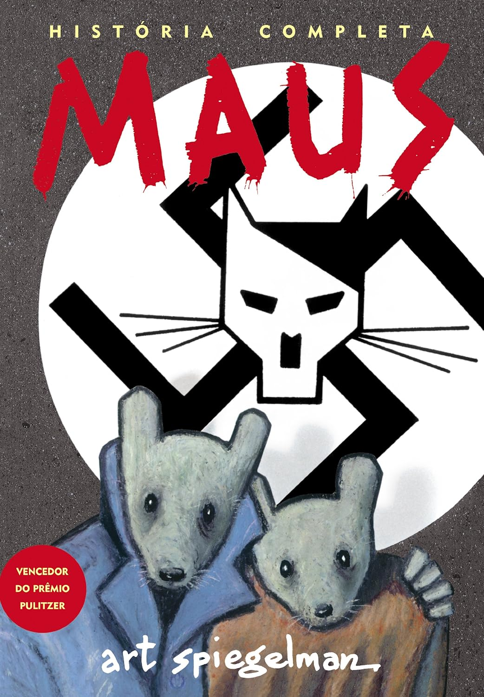
- A batalha do apocalipse
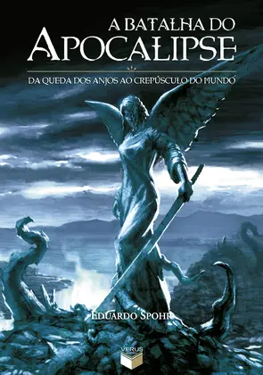
- Robo Selvagem
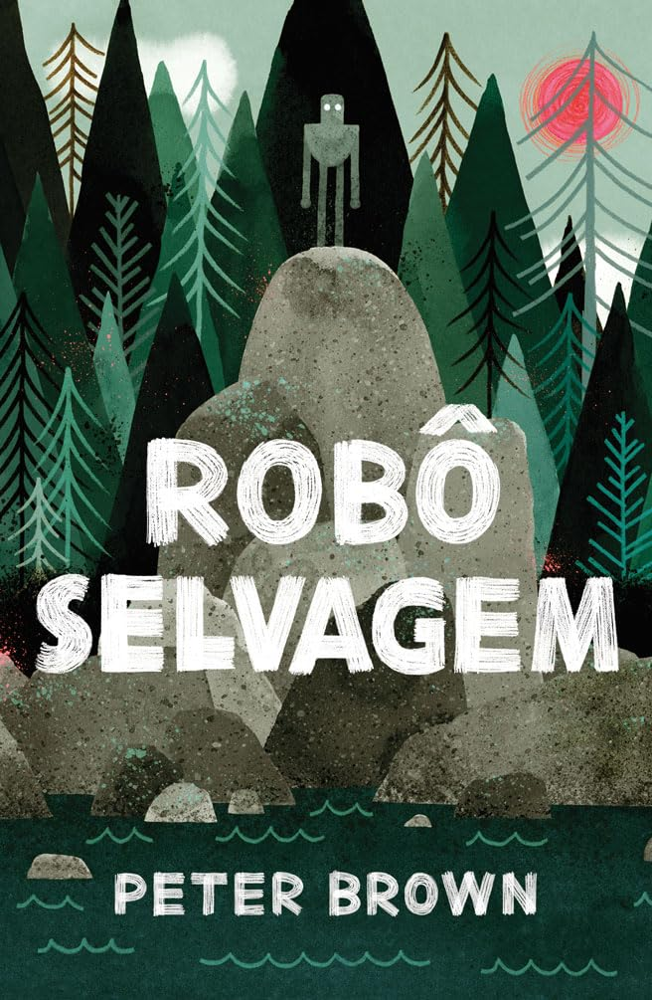
- Viagem ao centro da terra
Alimentos favoritos (nao ordenados)
- Agua
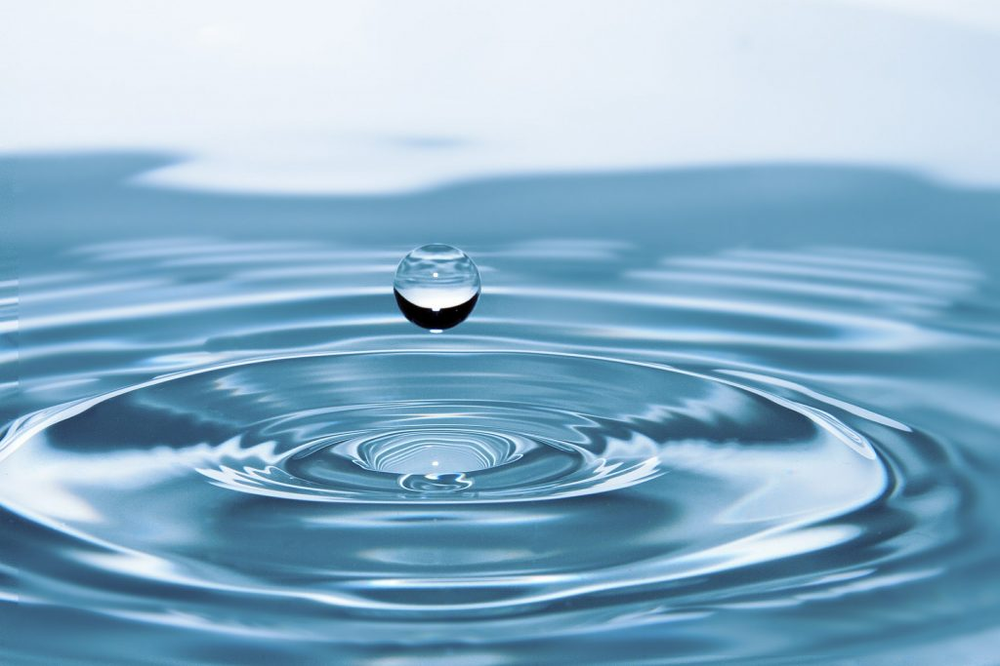
- Monster
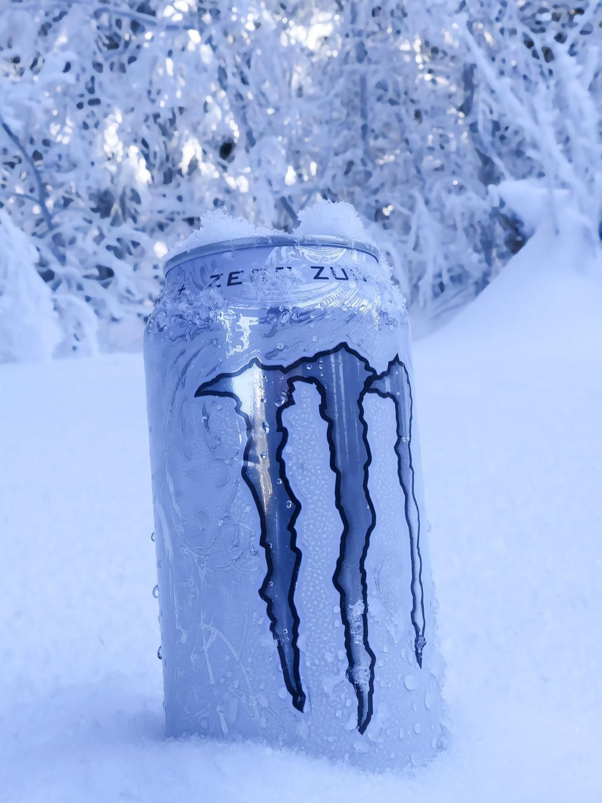
- enrroladinho de salsicha
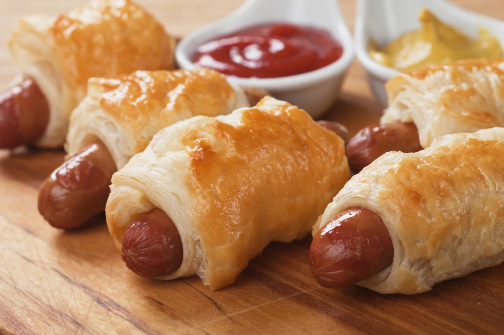
- monster
- monster